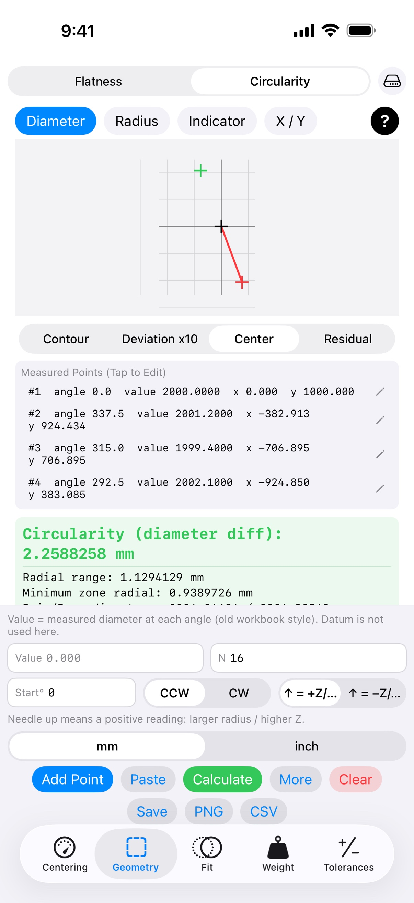

Planeidad y circularidad — sin la caminata a la hoja de cálculo.
El flujo tradicional es conocido: anotar las lecturas de la esfera, caminar hasta el PC de la oficina, abrir la macro de Excel, ejecutar Solver, copiar los números al informe. CNC Workpiece Calculator 1.0.2 pone todo ese ciclo en tu bolsillo — un solver de zona mínima para planeidad y un ajustador de circularidad de tres métodos que corren en el dispositivo en menos de un segundo, junto a las herramientas de centrado, ajustes ISO, tolerancias y peso que ya tenía la app.
Para ajuste e inspección CNC, talleres de mecanizado, ingenieros de calidad y formación. Todo funciona sin conexión en iPhone y iPad — sin cuenta, sin anuncios, sin rastreo y sin red.


Geometry NUEVO EN 1.0.2
La planeidad y la circularidad son donde la inspección se vuelve dolorosa. La medición en sí toma dos minutos con un comparador — lo que mata el trabajo son los cálculos: un problema de banda Z mínima que nadie resuelve a mano, normalmente delegado a una macro de Excel con Solver que vive en un solo PC, protegida por bloqueos de archivo y avisos de macros.
| Paso | Excel + Solver | CNC Workpiece Calculator |
|---|---|---|
| Introducir lecturas | Teclear en una cuadrícula del PC de la oficina | Teclado numérico propio en la máquina, iPhone o iPad |
| Planeidad | Ejecutar Solver y esperar que la convergencia esté bien configurada | Simplex LP en dos fases, instantáneo, con estado de convergencia visible |
| Nivelación | Deducir las cuñas a mano desde la ecuación del plano | Consejos de nivelación punto por punto con mejora prevista |
| Circularidad | Una convención de hoja de cálculo, una sola respuesta | Ajustes algebraico, geométrico y de zona mínima lado a lado |
| Informe | Capturar la hoja de cálculo | PNG de un toque (gráfico + resultados) o CSV |
Tres ajustes de círculo, etiquetados con honestidad
Mínimos cuadrados algebraicos, mejor ajuste geométrico y una búsqueda de zona mínima por Nelder–Mead corren juntos. La diferencia de diámetro compatible con Excel y el rango radial de zona mínima, más ajustado, se reportan por separado — se acabó discutir entre convenciones viejas y nuevas.
Seis vistas de gráficos
Disposición, desviación ×10, residuos, plano 3D, contorno y zoom al centro — cambia en vivo mientras entran los puntos. Los puntos seleccionados se resaltan y la vista se escala a tus datos.
Exportación que encaja con el flujo
Un toque genera un PNG de 1200×800 con el gráfico y un panel de resultados, directo a Fotos o a la hoja de compartir. Los puntos se exportan como CSV. Las sesiones guardadas se recargan desde el panel Más.
Todo lo demás que hace
La pestaña Geometry se une a las herramientas que la app ya traía — todo sin conexión, todo en el dispositivo.
Centrado con sonda
Introduce los puntos X/Y medidos (con compensación del diámetro de la sonda) y calcula el centro/la geometría para círculo, rectángulo, elipse, ranura recta y doble círculo.
Ajustes eje–agujero
Comprueba rápidamente tamaño nominal + grados de tolerancia (p. ej., H7/h6) y ve el resultado del ajuste al elegir tipos comunes de agujero/eje.
Tolerancias generales
Referencia de tolerancias dimensionales y geométricas (rectitud/planeidad, perpendicularidad, excentricidad circular, etc.) con resultados claros para el taller.
Estimación de peso
Estima el peso de formas comunes (placa, tubo, barra, anillo…) con materiales predefinidos, cantidades y unidades métricas/imperiales.
Diseñado para manos con guantes
Un teclado numérico propio con reemplazo al primer toque, cambio de signo y autoscroll — sin pelear con el teclado del sistema en plena medición.
Sin conexión y privado
Sin cuenta, sin anuncios, sin SDK de rastreo. Las sesiones se guardan en el dispositivo. Funciona en redes de taller restringidas porque nunca necesita red.
Tutorial rápido
Cinco flujos de trabajo — geometry, centrado, ajustes, peso y tolerancias.




¿Para quién es?
Talleres y ajuste CNC
Centrado, ajustes y comprobaciones geométricas rápidas sin caminar al PC de la oficina.
Calidad e inspección
Zona mínima de planeidad y circularidad con convenciones etiquetadas con honestidad — y un informe PNG para adjuntar.
Formación
Muéstrale a los operarios nuevos qué recupera realmente la nivelación y cómo es el plano ajustado.
Preguntas frecuentes
¿Puede reemplazar mi macro de Excel de planeidad con Solver?
Para uso en el taller, sí — la pestaña Geometry resuelve el mismo problema de banda Z mínima con un solver simplex LP en dos fases, en el dispositivo, en menos de un segundo. Reporta el valor de planeidad, el rango inicial, la reducción por nivelación, el plano ajustado y consejos punto por punto. Para documentación de auditoría, exporta los puntos como CSV y procésalos en tus propias herramientas.
¿Qué número de circularidad reporta — la vieja diferencia de diámetros o la zona mínima?
Ambos, separados a propósito: la diferencia de diámetros en el centro algebraico (la convención clásica de la hoja de cálculo) y el rango radial de zona mínima (el valor más ajustado, conforme a norma).
¿Cómo introduzco lecturas de comparador para la circularidad?
Cambia al modo Comparador, introduce como Ø de referencia el diámetro donde el comparador marca cero, y añade cada lectura con signo. El ajuste de signo del dial corresponde a cómo está montado tu comparador (aguja arriba = radio mayor o menor).
¿En qué se basan los consejos de nivelación?
En el plano ajustado de banda mínima. Para cada punto medido muestra la corrección de cuerpo rígido sugerida y el residual previsto tras la corrección — la mejora que puedes esperar solo por calzar o renivelar, antes de mecanizar nada.
¿Puedo exportar resultados para mis registros de calidad?
Sí. Un toque genera un PNG de 1200×800 con el gráfico y un panel de resultados resaltado, guardado en Fotos o en la hoja de compartir. Los puntos medidos se exportan como CSV.
¿La app necesita Internet?
No. Todos los cálculos, gráficos, sesiones guardadas y exportaciones funcionan sin conexión.
¿Recopila algún dato?
No se usan SDK de analítica ni de rastreo. Consulta la política completa en la página de Privacidad.
¿Puedo usarla en iPad?
Sí — la interfaz está diseñada para flujos de trabajo de iPhone y iPad.
¿Dónde informo de un error o pido una función?
Escribe a wangning.engineer@outlook.com.
Descargar
¿Listo para usarlo en el taller?